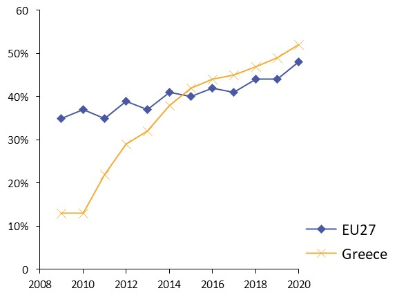
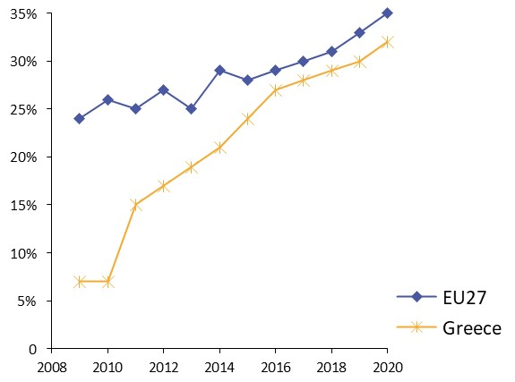
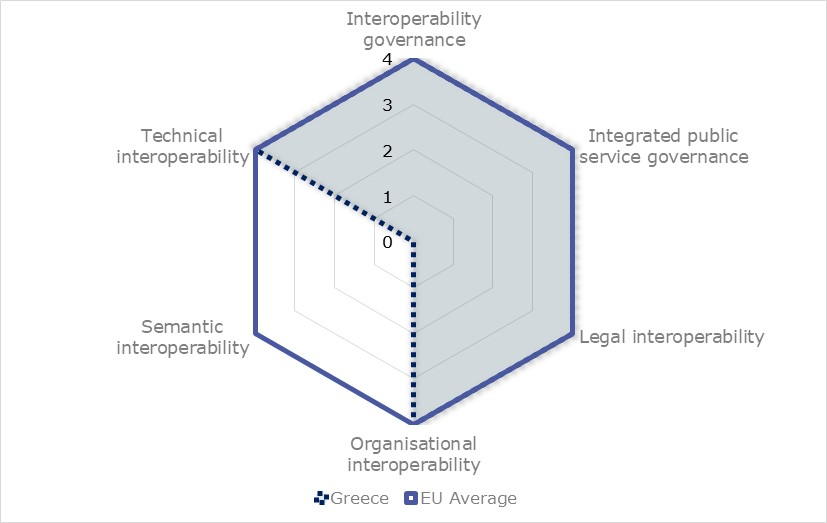
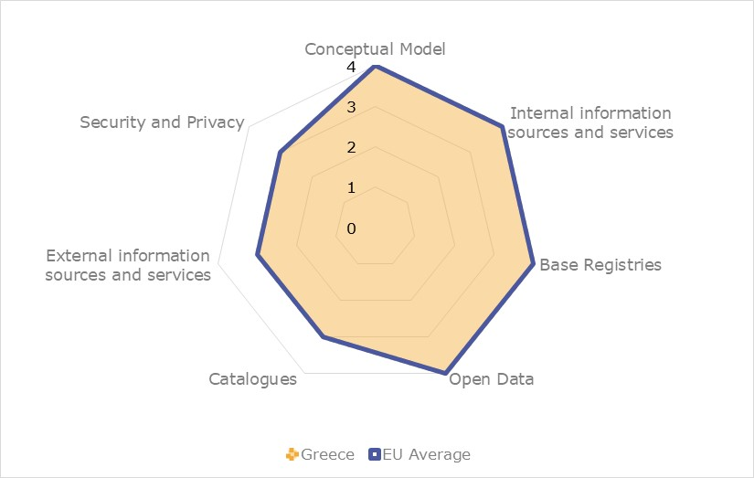
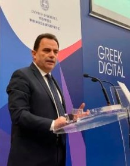

Digital Public Administration factsheet 2021
Greece
Digital Public Administration Factsheet 2021
Table of Contents
2 Digital Public Administration Highlights 10
3 Digital Public Administration Political Communications 12
4 Digital Public Administration Legislation 22
5 Digital Public Administration Governance 30
6 Digital Public Administration Infrastructure 41
7 Cross Border Digital Public Administration Services for Citizens and Businesses 56
Please note that the data collection exercise for the update of the 2021 edition of the Digital Public Administration factsheets took place between March and June 2021. Therefore, the information contained in this document reflects this specific timeframe.
Country
Profile
1
Country Profile
Basic data
Population: 10 700 556 inhabitants (2020)
GDP at market prices: 165 829.8 million Euros (2020)
GDP per inhabitant in PPS (Purchasing Power Standard EU27=100): 64 (2020)
GDP growth rate: -8.2% (2020)
Inflation rate: -1.3% (2020)
Unemployment rate: 16.3% (2020)
General government gross debt (Percentage of GDP): 205.6% (2020)
General government deficit/surplus (Percentage of GDP): -9.7% (2020)
Area: 132 049 km²
Capital city: Athens
Official EU language: Greek
Currency: EUR
Source: Eurostat (last update: 8 February 2021)
Digital Public Administration Indicators
The following graphs present data for the latest Generic Information Society Indicators for Greece compared to the EU average. Statistical indicators in this section reflect those of Eurostat at the time the Edition is being prepared.
Percentage of individuals using the internet for interacting with public authorities in Greece | Percentage of individuals using the internet for obtaining information from public authorities in Greece |
|  |
Percentage of individuals using the internet for downloading official forms from public authorities in Greece | Percentage of individuals using the internet for sending filled forms to public authorities in Greece |
 |
|


Interoperability State of Play
In 2017, the European Commission published the European Interoperability Framework (EIF) to give specific guidance on how to set up interoperable digital public services through a set of 47 recommendations. The picture below represents the three pillars of the EIF around which the EIF Monitoring Mechanism was built to evaluate the level of implementation of the EIF within the Member States. It is based on a set of 71 Key Performance Indicators (KPIs) clustered within the three main pillars of the EIF (Principles, Layers and Conceptual model), outlined below.

Source: European Interoperability Framework Monitoring Mechanism 2020

Source: European Interoperability Framework Monitoring Mechanism 2020

Source: European Interoperability Framework Monitoring Mechanism 2020
The Greek results for the implementation of interoperability layers assessed for Scoreboard 2 shows a strong performance, despite the lack of data for semantic interoperability. All other layers received an overall score of 4, equivalent to the EU average. Possible areas for improvement are in Recommendation 22 (interoperability governance), which states that countries should use a structured, transparent, objective and common approach to assessing and selecting standards and specifications, and in Recommendation 29 (organisational interoperability), which states that countries should standardise and formalise organisational relationships for establishing and operating European public services.

Source: European Interoperability Framework Monitoring Mechanism 2020
eGovernment State of Play
The graph below presents the main highlights of the latest eGovernment Benchmark Report, an assessment of eGovernment services in 36 countries: the 27 European Union Member States, as well as Iceland, Norway, Montenegro, the Republic of Serbia, Switzerland, Turkey, the United Kingdom, Albania and Macedonia (referred to as the EU27+).
The study evaluates online public services on four dimensions:
- User centricity: indicates the extent to which a service is provided online, its mobile friendliness and its usability (in terms of available online support and feedback mechanisms).
- Transparency: indicates the extent to which governments are transparent about (i) the process of service delivery, (ii) policy making and digital service design processes and (iii) the personal data processed in public services.
- Cross-border services: indicates the extent to which users of public services from another European country can use the online services.
- Key enablers: indicates the extent to which technical and organizational pre-conditions for eGovernment service provision are in place, such as electronic identification and authentic sources.
The 2021 report presents the biennial results, achieved over the past two years of measurement of all eight life events used to measure the above-mentioned key dimensions. More specifically, these life events are divided between six ‘Citizen life events’ (Career, Studying, Family life, measured in 2020, and Starting a small claim procedure, Moving, Owning a car, all measured in 2019) and two ‘Business life events’ (Business start-up, measured in 2020, and Regular business operations, measured in 2019).
Source: eGovernment Benchmark Report 2021 Country Factsheets
Digital Public Administration Highlights
2
Digital Public Administration Highlights
Digital Public Administration Political Communications
The National Cyber Security Authority of the Ministry of Digital Governance has developed an upgraded national cybersecurity strategic plan. The framework includes an assessment of the cyber security landscape, the identification of new challenges and success factors, stakeholder mapping, and an action plan for implementation.
In response to the COVID-19 public health crisis, the Greek government prepared a comprehensive National Vaccination Operational Plan against COVID-19 to quickly ensure the immunisation of the population.
The Hellenic Ministry of Digital Governance (MDG), as the owner and coordinator of the National Strategy for AI (Artificial Intelligence), has progressed towards the final preparation of the relevant documents and in the coming months, the Greek AI strategy will be finalised and subjected to consultation.
The Digital Transformation Bible is the new national digital strategy. It builds upon the five DESI chapters, combined with a strong governance model to coordinate the implementation with all actors concerned. It also foresees the coordinated implementation of major IT projects, both in the short-term and long-term. New legislation under this strategy was recently passed, namely Government Gazette B’2894/2021.
Digital Public Administration Legislation
Law 4727/2020 (Government Gazette A’184/23.09.2020) on Digital Governance provides for the creation of a register of public administrative procedures and a citizen communication register and the provision of the necessary institutional framework for the digital transformation of the Greek public sector.
Digital Public Administration GovernanceThe new Ministry of Digital Governance brings together all the Information Technology and Telecommunications infrastructure related to the provision of digital services for citizens and businesses. It aims to provide the framework for citizens and businesses to benefit from an inclusive Digital Single Market.Digital Public Administration Infrastructure
GOV.GR is the Single Digital Portal of the Greek public administration for citizens and enterprises, hosting more than 1100 digital services. The portal has recently been updated to add features that aim to increase its usability and accessibility. When fully developed, GOV.GR, will act as the single point of digital contact between citizens/ businesses and the ‘front office’ of the public administration.
In the wake of COVID-19, the Ministry of Digital Governance launched a project to improve the digital literacy of all citizens through the creation of the National Digital Academy. The aim of the academy is to link the policies of the Hellenic Ministry of Digital Governance with the development of citizens' digital skills by offering a plethora of educational opportunities on an electronic platform.
Digital Public Administration Political Communications
3
Digital Public Administration Political Communications
Specific political communications on digital public administration
Berlin Declaration on Digital Society and Value-Based Digital Government
In December 2020, the Greek government signed the Berlin Declaration on Digital Society and Value-Based Digital Government, thus re-affirming its commitment – together with other EU Member States – to foster digital transformation in order to allow citizens and businesses to harness the benefits and opportunities offered by modern digital technologies. The Declaration aims to contribute to a value-based digital transformation by addressing and strengthening digital participation and digital inclusion in European societies.
Action Plan on the Utilisation of Next Generation EU Resources
- investing in renewable energies and the expansion of the mainland energy grid to cover island communities;
- building a high-quality digital infrastructure and rolling out the 5G technology; and
- fully digitalising the Independent Authority for Public Revenue (IAPR) to allow companies to digitally report their financial information to tax authorities.
National Vaccination Operational Plan against COVID-19 – Operation Freedom
COVID-19 poses a major threat to public health as it causes significant morbidity and mortality in certain groups of the population. Its danger is intensified by its ease of transmission, despite the multi-level interventions and extensive measures that have been taken. The Greek Government has prepared a comprehensive National Vaccination Operational Plan against COVID-19, dubbed Operation Freedom, to quickly ensure the immunisation of citizens against the virus.
Digital Transformation Bible (2020-2025)
- safe, fast, and reliable access to the internet for all;
- a digital State offering better digital services to all citizens in all life aspects;
- development of digital skills for all citizens;
- facilitation of the digital transformation of enterprises;
- support and strengthening of digital innovation;
- making productive use of public administration data; and
- incorporation of digital technologies in all economic sectors.
National Programme for Process Simplifications
The National Programme for Process Simplifications (EPAD) was established by Law 4635/2019. Under the supervision of the Prime Minister, the EPAD is the central intergovernmental framework aiming at the reduction of administrative burdens. It is the central government framework for inter-ministerial coordination, design and implementation of procedure reengineering and simplification for the public sector, aiming at reducing administrative burden and bureaucracy. The programme consists of three pillars of simplification, namely:
- qualitative and friendly legislation
- simple and comprehensive procedures; and
- citizen engagement.
Currently, all necessary actions include the elaboration, coordination, and implementation of the EPAD on certain vertical policies (i.e. transport, justice, naturalisation, etc.).
Bureaucracy Observatory
Greek National Coalition for Digital Skills and Jobs
Established in May 2018, the Greek National Coalition for Digital Skills and Jobs is a synergy between various entities, public or otherwise, which seek to promote digital skills in Greek society. The objectives of the National Coalition are to facilitate cooperation between all parties to introduce actions with the aim of enhancing digital skills, and to address the digital gap issue in every sector of the Greek economy and society. To achieve the above objectives and in accordance with the European Commission’s Digital Skills and Jobs Coalition, the following four (4) target groups have been established:
- education: enrichment and digital transformation of the learning and teaching process for pupils and students. Integral part of this effort is the provision of incentives for the continuing training of teachers;
- training: development of digital skills of employees, unemployed and businessmen to promote digital economy;
- information and communications technology professionals: promotion of high-level digital skills for ICT professionals in all industry sectors; and
- citizens: the objective is to enhance digital skills to enable all citizens to be active in our digital society.
National Digital Strategy
- developing next generation national connectivity infrastructures;
- accelerating the digitisation of the economy;
- promoting the ICT industry to develop the digital economy and employment;
- empowering human resources with digital skills;
- thoroughly reviewing the provision of digital public services;
- eliminating exclusion and disseminating the benefits of the digital economy; and
- enhancing security and trust.
The National Digital Strategy has been revised for the period 2020-2025. In addition to the publication of the abovementioned Digital Transformation Bible, the revised edition focusses on developing actions for the gradual utilisation of open public sector data as a fundamental infrastructure and development resource. The starting point is high-value data or Public Purpose Data, followed by data in selected subject areas (such as economics and business) and concludes with the effective use of public, business, and scientific data on a large scale. At the technological level, the upgrade of the National Open Data Portal and its interconnection with the European Open Data Portal (EDP) as well as the Transparency Programme Portal are underway.
Strategy for Digital Growth 2014–2020
The main areas of improvement are:
- open data;
- interoperability;
- smart applications and services;
- access;
- critical mass;
- digital skills; and
- IT governance and change management.
The main strategic objectives are the following:
- ensuring access to advanced digital infrastructures;
- creating a smart and viable ecosystem for a better quality of life;
- ensuring competitive entrepreneurship in the international digital environment;
- ensuring smart operation and interconnection of the state; and
- ensuring digital cohesion to tackle social challenges.
Strategy for eGovernment 2014–2020
The main vision of the Strategy for eGovernment is to promote the use of information and communication technologies (ICT) as a catalyst for the development of modern governance tools. The Greek public administration aims to build trust and become more efficient and productive by providing citizens and businesses with more user-centric online services that will be constantly upgraded.
The strategy highlights the following principles:
- interoperability;
- comply or explain;
- consolidation;
- non-duplication;
- Once-Only;
- feasibility and viability;
- transparency;
- accessibility;
- security and privacy; and
- participation of citizens.
The strategy has the following three main strategic objectives:
- modernisation of the State and public administration;
- reconnection of citizens with the State and public administration; and
- coordination of horizontal ICT policy in public administration.
National Strategy on Broadband
In June 2015, the Greek authorities defined the national broadband strategy entitled National Plan for Next Generation Broadband Access 2014–2020 (NGA Plan). This strategy aimed to provide internet access with speed over 30 Mbps for all Greeks by 2020, and provide 50% of households with internet available at a speed exceeding 100 Mbps. The present National Broadband targets are in line with DAE 2020 and Gigabit Society 2025. So far, EUR 160 million of public funds have been utilised for broadband development in rural areas and EUR 300 million are going to be utilised in the framework of the UFBB project, in NGA-white areas throughout the country.
The Rural Broadband project, awarded in the framework of the 2017 European Broadband Awards provides broadband infrastructure coverage to almost 45% of Greek territory in specific rural areas, providing 95.96% of the population with a speed of minimum 30Mbps in the three geographical areas.
The Superfast Broadband (SFBB) project is a demand voucher scheme with a EUR 50 million budget that subsidises citizens to obtain a new broadband connection (or upgrade an existing one) to at least 100Mbps (readily upgradable to 1Gbps).
The Ultrafast Broadband project directly contributes to the second strategic objectives of the NGA plan and has a EUR 700 million budget. It concerns an aid scheme that was approved on 31/7/2019 (SA.53135). The project will be implemented in areas that are mutually exclusive with regards to the SFBB and Rural Broadband (RB) projects. The newly deployed infrastructure will bring significant new capabilities to the market in terms of broadband service availability and capacity, speed, and the level of competition. In particular, the notified measure aims to ensure 100Mbps availability to most of the covered area, exceeding 98% of the active lines and 75% of the settlements, while ensuring gigabit upgradability. It therefore defines two classes of areas.
The WiFi4GR project, with a EUR 15 million budget, is subject to a framework agreement for the supply, installation, configuration, and operation of 5,600 wireless access points that will be installed in 2,500 areas across the country over the period of three years. Citizens will be provided with free and non-discriminatory broadband internet access via outdoor and indoor Wi-Fi Hotspots.
Fourth National Action Plan on Open Government 2019–2021
- public participation;
- open public data; and
- integrity and accountability.
Interoperability
National Digital Strategy for Interoperability
The National Digital Strategy for Interoperability is outlined in the Digital Transformation Bible 2020-2025. Specific guidelines are provided to help accomplish interoperability in all technical, semantic, organisational, and legal dimensions, both at national and international level and for various policy areas. Moreover, dedicated structures such as the Interoperability Centre, tasked with the coordination of all base registries as well as departments responsible for interoperability policy coordination and implementation, have been created to implement effective, citizen-centric cross-border digital services.
The strategy also outlines strategic planning that incorporates important policy projects, such as the alignment of the new European Interoperability Framework with the national framework, the implementation of a horizontal governance model, and projects that target the sectoral level for the implementation of interoperable digital services.
eGovernment Interoperability Framework
The implementation of the Greek eGovernment Interoperability Framework (Greek eGIF), institutionalised by State Law 3882/2010, begun on 28 October 2006. The project was carried out within the framework of the Operational Programme of the Information Society (OPIS) and aimed at defining standards, specifications and rules for the development and deployment of web-based front- and back-office systems for the Greek public administration at national and local level.
Digital Authentication Framework
The Digital Authentication Framework aims at effectively supporting eGovernment at central, regional and local level, and contributes to achieving interoperability at information system, procedure and data level. More specifically, the Framework sets the standards, procedures and technologies required for the registration, identification and authentication of eGovernment services users, including citizens, businesses, public authorities and civil servants. It also aims to create an integrated and coherent set of policies regarding digital certificates and public key infrastructures.
Certification Framework for Public Administration Sites and Portals
The Certification Framework for Public Administration Sites and Portals specifies the directions and standards to be followed by public agencies at central or local level when designing, developing and deploying the eGovernment portals of the public administration, and supporting eGovernment services.
Interoperability and Electronic Services Provisioning Framework
The Interoperability and Electronic Services Provisioning Framework defines the basic principles and the general strategy to be followed by public agencies when developing eGovernment information systems. It also provides organisational and semantic interoperability guidelines, as well as technical specifications and communication standards.
Key enablers
Access to public information
No political communications in this field have been adopted to date.
eID and Trust Services
Cross-checking process
Recently, the General Secretariat of Public Administration Information Systems undertook the process of cross-checking and correlating base registries as a key step in achieving the implementation of eID and trust services. The cross-checking process is specified in Articles 48 and 53 of Law 4623/2019 (Government Gazette 134/A/9-8-2019).
Security aspects
National Cybersecurity Strategy 2020-2025
In December 2020, the National Cybersecurity Authority of the Ministry of Digital Governance issued an upgraded National Cybersecurity Strategy for 2020-2025. The new strategic framework includes, inter alia, an in-depth assessment of the current situation, the identification of new challenges and critical success factors, the mapping of key stakeholders, as well as a concrete action plan with flagship activities, milestones, and indicators to implement the following strategic objectives:
- a functional cybersecurity governance system;
- shielding critical infrastructures and securing new technologies;
- incident management optimisation, fight against cybercrime and privacy protection;
- a modern environment for cybersecurity investments with emphasis on the promotion of research and development; and
- capacity building, promoting information and awareness raising.
All in all, the NCSS 2020-2025, is an indispensable tool for digital technologies utilization, as well as building confidence and trust in digital transformation among citizens and businesses.
Interconnection of base registries
Service Level Agreement
A Service Level Agreement was signed between the General Secretariat of Information Systems for Public Administration and the Ministry of Internal Affairs regarding the Citizens Registry.
eProcurement
Ministerial Decisions on eProcurement
Through Law 4412/2016 (Government Gazette 147/A/8-9-2016), the Ministry of Development issued a series of ministerial decisions regulating the functioning of the National Electronic Procurement System and the Central Electronic Public Procurement Register.
Domain-specific political communications
Single Digital Map
- terms and restrictions of construction;
- land use;
- City plans;
- plot and building lines;
- land parcels;
- forests;
- Natura 2000 areas or special habitat protection areas;
- seashore, beach and port areas;
- waters, streams, wetlands, navigable rivers and large lakes;
- archaeological sites or historical sites; and
- traditional settlements or protected areas.
Once land registration is complete, the boundaries of all plots will be added. Should a public service refuse to grant its approval, a draft law is being prepared to protect the rights of citizens with a legitimate interest in geospatial data.
National Action Plan for Gender Equality 2016–2020
- social inclusion and equal treatment of women who suffer multiple discrimination;
- gender-based violence;
- labour market, family and work-life balance; and
- education, training, culture, sports and media.
Emerging technologies
Mobile communications and 5G
The tender process, which was finalised after the completion of the public consultation and started in September 2020, was designed and implemented in a transparent and efficient manner and according to a strict schedule that was consistently adhered to. It is also noted that the procedure was fully compliant with the current European regulatory framework.
To facilitate the development of the 5G ecosystem, the Ministry of Digital Governance established a State-run investment fund known as the Phaistos Fund. Its purpose is the investment in businesses (start-ups or otherwise) which are active in the research and/or development of solutions based on 5G. Eligible companies could be active in such sectors as transport, logistics, manufacturing, industry, defence, goods and utility networks, health, tourism, information, and media. The fund, established under the Greek Law 4727/2020, operates in the public interest in accordance with private economy rules for the service of special public purpose, as per the Fourth Part of Law 4389/2016 (Article 94) and of Law 4548/2018 (Article 104). It will be funded by 25% with the proceeds of the auction for 5G network frequencies. A parallel target is the participation of the private sector and the attraction of private funds with a value of up to 30% of the State revenue, approximately EUR 30 Million.
Space Technologies and Applications
The Greek strategy in space matters aims to:
- strengthen national security and defence, especially with the utilisation and development of space infrastructure;
- develop the Greek space industry;
- utilise space data and develop relevant applications; and
- support space research and innovation.
The recent strategy on Digital Transformation 2020-2025 lays out specific activities the government will undertake in relation to space activities as follows:
- upgrade of the Hellenic Copernicus Collaborative Ground Segment;
- GOVSATCOM- GreeCom;
- line of action for the development of 5G Networks;
- GOVSATCOM- GreeCom
- fibre in the sky and ground infrastructures;
- development of the Micro-Satellite Project;
- applications of Secure Quantum Cryptography – EuroQCI; and
- National Experimental Infrastructure for the Quantum Key Distribution (QKD).
European Digital Innovation Hubs
The network of European Digital Innovation Hubs (EDIH) is expected to act as one-stop shop for innovation services using cutting edge digital technologies, such as test before invest, training and skills, financial advice and assistance to transformation of processes, products and services. Therefore, the digital opportunities and the technology advancement will be provided by this network and will be partially funded under the Digital Europe Programme (DEP) for the period 2021-2027.
In this context, the General Secretariats for Digital Governance and Process Simplification, Research and Technology, and Industry and Labour launched an open call to designate the potential hubs. In this open call, the proposals were evaluated and finally 15 hubs were selected at the end of December 2020. These hubs are eligible to apply in the Commission’s upcoming restricted call.
Memorandum of Understanding on Cooperation and the Exchange of Best Practices in the field of Distributed Accounting Technology
Declaration on Cooperation on Artificial Intelligence
National Strategy for AI
- National AI infrastructure: a key prerequisite for Greek organisations to adopt and fully leverage AI’s potential;
- AI for economy growth: to exploit AI to foster Greece’s economy development;
- Inclusive AI for citizens and society: to ensure that AI Adoption in Greece embraces all citizens without exclusions;
- AI made in Greece: positioning Greece not only as a passive consumer of AI technology, but also as an active innovator in the global AI ecosystem; and
- AI for public sector efficiency: deploying AI in the public sector to accelerate digital transformation.
The new national AI strategy provides a total of 66 recommendations.
Declaration on Cooperation on QCI
Digital Public Administration Legislation
4
Digital Public Administration Legislation
Specific legislation on digital public administration
Law on Digital Governance
Law 4727/2020 (Government Gazette A’184/23.09.2020) on Digital Governance (Transposition to the Greek Legislation of Directive (EU) 2016/2102 and Directive (EU) 2019/1024) – Electronic Communications (Transposition to the Greek Law of Directive (EU) 2018/1972) and other provisions contain numerous provisions regarding government digital services, such as:
- the creation of a personal number (PA) for citizens to allow their formal identification in the provision of public services;
- the creation of an electronic registered delivery service for the private and public sectors;
- the creation of a Register of Public Administrative Procedures and a Citizen Communication Register;
- the strengthening of the Single Digital Portal, gov.gr;
- the obligation to provide digital public services through the Single Digital Portal of Public Administration (gov.gr – EIP);
- the establishment of the permanence of new digital services that were introduced as a direct result of the COVID-19 public health crisis;
- the provision of the necessary institutional framework for the digital transformation of the Greek public sector and society; and
- the development of measures pertaining to the Transparency Programme, public sector information, open data and other issues related to transparency and open government.
Law ‘I invest in Greece and other Provisions’
Law 4635/2019 (Government Gazette 167/A/30-10-2019) contains numerous provisions regarding government digital services, such as:
- the creation of the open Single Digital Map which will collect and centralise geospatial data, such as land use and building planning;
- the creation of a single digital public administration portal, “gov.gr”, which will gather all digital public services under one single portal;
- the implementation of the National Programme for Process Simplifications by the Ministry of Digital Governance to simplify administrative processes; and
- the precise procedure to be followed from 1 January 2021 for the compulsory electronic submission of applications to Administrative Courts.
Ministry of Interior Regulations, Digital Governance Provisions, Pension Arrangements and other Urgent Issues
Law 4623/2019 (Government Gazette 134/A/9-8-2019) provides, inter alia, for the following:
- where the provisions of Articles 1 to 40 of Law 3979/2011 (A '138) refer to the Minister of Administrative Reconstruction, hereinafter referred to as the Minister of Digital Governance;
- the Ministry of Digital Governance is designated to coordinate the processing of all non-personal data of the public sector within the meaning of Article 3 of Law 3979/2011 (A '138) and specifies the purpose and means of processing, in particular with a view to the strategic planning and processing, use and storage of data owned by such entities through the use of new technologies, such as interoperability of information systems and applications, transmission of data between bodies, cloud services, and high availability and re-use of public sector information and data at the conditions specified by PD 28/2015 (A 34) and Regulation (EU) 2018/1807 of 14 November 2018 on a framework for the free flow of non-personal data in the European Union (Article 47);
- the General Secretariat of Digital Governance and Simplification of Procedures (Article 21) is mandated to design and implement the government’s digital transformation policy, promote digitisation and the use of eGovernment practices throughout the public sector, promote digital skills and provide related training opportunities to state employees. It is also responsible for undertaking all necessary initiatives for simplifying administrative procedures across the public sector and transforming them into digital processes, avoiding the development of digital red tape;
- the Digital Transformation Bible shall be introduced to update and replace the National Digital Strategy (Article 49); and
- the General Secretariat of Public Administration Information Systems is responsible, inter alia, for the electronic identification and authentication of citizens and for the Single Central Portal of the Hellenic Republic, i.e. a public access portal, as well as the cross-sectoral interoperability, and the interoperability of individual registers of the public sector and the public sector within the meaning of Article 3 of Law 3979/2011 (A '138).
Law on eGovernment
Law 3979/2011 (Government Gazette 138/A/16-6-2011)establishes a general framework for eGovernment in public administration, setting out: (i) the definition of the basic principles, as described in Article 4; (ii) the obligations of the public sector for the use and exploitation of new technologies, as described in Article 6; (iii) the provision to citizens of the rights related to the processing of personal data and the use of ICT, as described in Articles 7, 8 and 9; and (iv) the regulation of matters concerning the storage and transmission of electronic copies, files and protocols, and issues related to the authentication of users of services, as described in Articles 14, 15 and 16. The Law places particular emphasis on:
- electronic communication and data exchange between natural/legal persons and the public sector;
- electronic submission of applications, statements and documents;
- dissemination of public sector information, as well as disclosure of documents to citizens and businesses by electronic means;
- engagement of citizens in eGovernment services;
- authentication;
- issuance, storage and types of digital certificates;
- online payments; and
- privacy and privacy issues.
Law on Urgent Measures to address the Consequences of COVID-19 and the Risk of Spreading
Law 4683/2020 (Government Gazette A '83/10.04.2020) establishes – among other things - the legal framework for urgent measures to i) address the consequences of the COVID-19 spread; ii) provide support to the society, in general, and entrepreneurship, in particular; and iii) ensure the smooth operation of the market and public administration.
In the third section, the Law contains arrangements for the digital operation and the response to urgent needs of public administration, including the issuance of documents via the national digital gateway of the public administration (“gov.gr” Portal), the submission by citizens of applications to public administration, the possibility for citizens to complete and electronically sign authorisation documentations and declarations of honour, and the electronic submission of applications through Citizens’ Service Centres (KEP in Greek).
Law on the Unified Mobility System in Public Administration and Local Government
Law 4440/2016 (Government Gazette 224/Α/2-12-2016) establishes permanent voluntary mobility of public sector personnel based on an electronic database and an evaluation procedure for submitted applications.
Law on the Democratisation of the Administration
Law 4325/2015 (Government Gazette 47/A/11-05-2015) extends Law 3979/2011 (Government Gazette 138/A/16-6-2011) regarding Electronic Identification (Article 10) and Electronic Exchange of Public Documents – Security of Information Systems of the Public Sector (Article 13), and amends Law 2690/1999 on the Ex Officio Internal Search of (Electronic) Certificates (Article 12). Specifically, Article 10 states that the authentication method for electronic services should comply with Regulation (EU) No 910/2014 (eIDAS) and technical issues relating to base registry authentications will be resolved through ministerial decisions.
Interoperability
Law on Interoperability Organisation
Law 4623/2019 (Government Gazette 134/A/9-8-2019) provides, inter alia, articles dedicated to interoperability of new organisational structures, roles, and responsibilities at cross-sectoral and national level.
Law on Digital Governance
Law 4727/2020 (Government Gazette A’184/23.09.2020) on Digital Governance (Transposition to the Greek Legislation of Directive (EU) 2016/2102 and the Directive (EU) 2019/1024) – Electronic Communications (Transposition to the Greek Law of Directive (EU) 2018/1972) makes provisions at various levels and for various issues for the implementation of effective interoperable digital services at national and international level.
Key enablers
Access to public information
Law on Web Content Accessibility Guidelines
The recent Law 4727/2020 (Government Gazette A’184/23.09.2020) on Digital Governance integrates Directive (EU) 2016/2102 for digital accessibility into Greek legislation, aiming to safeguard the right to active and equal access of all citizens to mobile device websites and applications of public sector bodies. The law replaces articles 1-13 of law 4591/2019 on the accessibility of the websites and mobile applications of public sector bodies.
Law 4780/2020 establishes a National Accessibility Authority with the mission of constantly monitoring issues related to the right of access of people with disabilities and the formulation of relevant policies, with the responsibility, among others, for proposing the development and updating of accessibility standards in all areas, including the digital environment.
Law on the Re-use of Greek Public Sector Information
The legislative framework on the re-use of public sector information comprises a set of laws implementing EU directives aiming at reusing different types of public sector information and increasing transparency in the activities of public sector authorities. In particular, in 2003 Greece implemented Directive 2003/98/EC of the European Parliament and of the Council. The transposing law was then amended by Law 4305/2014 in 2014.
Recently, via Law 4727/2020, the Directive (EU)2019/1024 on open data and the further use of public information sector was transposed into Greek law, bringing it up to speed with current EU developments.
Law on the Ratification of the Pension Rules of the Draft Financial Assistance Contract
Law 4336/2015 (Government Gazette 94/Α/14-08-2015) provides for the creation of a portal ensuring easy access to legislation for citizens, both in published form and in codified version. The aim is for citizens to be able to trace all legislation relevant to their case in a clear and concise manner.
eID and Trust Services
Electronic Signatures
Presidential Decree 150/2001 came into force on 25 June 2001, implementing Directive 1999/93/EC of 13 December 1999 on a community framework for electronic signatures. In addition to defining electronic signatures and advanced electronic signatures, the Presidential Decree also deals with the legal consequences of electronic signatures, the liability of suppliers of certification, the obligation to protect personal information, the specific terms for recognised certificates and suppliers, the liability for the creation of a signature and recommendations for the verification of the signature. The matter is expected to be reformed by 2020.
Regulation (EU) No 910/2014 on electronic identification and trust services for electronic transactions in the internal market (eIDAS Regulation), adopted on 23 July 2014, provides a regulatory environment for secure and seamless electronic interaction between businesses, citizens and public authorities in the context of electronic services.
Trust Services
Law 4727/2020 defines the responsibilities related to trust services and outlines the operating framework of trust service providers. Moreover, it regulates the related procedures for the issuance and use of digital certificates issued by trusted service providers.
In compliance with the legislative act and Regulation 910/2014 (eIDAS), the approved digital signatures provided by the trust service providers are the legal equivalent of handwritten signatures in both substantive and procedural law. Furthermore, digital signatures provide secure communication and electronic transactions among public sector organisations, citizens, and businesses through internet applications.
Security aspects
Law on the Protection of Individuals regarding the Processing of Personal Data
Law 4624/2019 (Government Gazette 137/A/27-8-2019) establishes additional measures for the implementation of the General Data Protection Regulation (GDPR) and incorporates Directive (EU) 2016/680. The Law must be complied with by all public and private sector bodies/organisations that process personal data in the context of their activity. The GDPR imposes a number of new obligations on editors, which derive from basic principles and in particular the enhanced principle of transparency in the way data is collected, processed and stored, and the new accountability principle, according to which the data controller is responsible to demonstrate compliance with all principles governing the processing of personal data. Also, new rights are introduced such as ‘the right to be forgotten’ and the right to data portability.
Law on the Protection of Personal Data and Private Life about Electronic Telecommunications
Law 3471/2006 was adopted on 28 June 2006, revising Law 2472/1997 and aiming at setting preconditions with regard to personal data processing and the assurance of confidentiality in telecommunications. Law 3471/2006 was amended by Law 3917/2011 and Law 4070/2012.
The purpose of Articles 1 to 17 of this Law is the protection of the fundamental rights of individuals, in particular the right to privacy. To that end, conditions are established for privacy in the context of personal data processing, and security and privacy of electronic communications.
Law on a High Common Level of Security of Network and Information Systems
Greece transposed Directive 2016/1148/EU of the European Parliament and of the Council concerning measures on a high common level of security of network and information systems across the Union into Greek legislation with Law 4577/2018 (Government Gazette 199/A/3-12-2018). Furthermore, the ministerial decision no. 1027/2019 (Government Gazette 3739/Β/8-10-2019) lays down specific regulations, measures, and procedures for the effective implementation of the aforementioned legal framework, including (inter alia): the criteria for the definition of Operators of Essential Services (OES) at national level, security policy obligations, baseline security requirements, obligations for Chief Information Security Officers (CISOs), notification of incidents procedure, and an audit/sanctions framework.
Interconnection of base registries
General Secretariat of Public Administration Information Systems
Pursuant to Articles 38-41 of Law 4623/2019 (Government Gazette 134/A/9-8-2019), the General Secretariat of Public Administration Information Systems has undertaken the technical implementation of all interoperability-related initiatives and the development of services. Key elements contained in the National Citizens Registry of the Ministry of Interior have started to be made available to the Secretary-General of Public Administration Information Systems. That way, the recognition of citizens in multiple state registries is improved, reducing bureaucracy, and thus ensuring better, faster and more efficient public service delivery. Furthermore, the recent Ministerial Decision (10726/2020) regulates that significant registers are to provide quality public sector information as open data via APIs.
Law on the National Register of Minors
The Greek government adopted Law 4538/2018 (Government Gazette 85/A/16-5-2018) of the Ministry of Labour, Social Security and Social Solidarity on foster care and adoption, and the creation of a digital National Register of Minors. The Law aims at improving the transparency and speeding up of the adoption and foster care processes. The entire life cycle of the service will be fully digitised.
In addition, the Law establishes the National Register of Candidate Parents and Approved Foster Parents of Minors under the supervision of the National Centre for Social Solidarity (EKKA) and the maintenance of a National Register of Minors and Special Registers by all child protection and care units operating as non-profit organisations, listing the details of the minors they are hosting.
eProcurement
Law on Public Procurement
Law 4412/2016 (Government Gazette 147/A/8-9-2016) on Public Procurement amends Law 4155/2013 (Government Gazette 120/A/29-5-2013), extends the provisions for eProcurement and sets the provisions for the adaptation of Greek procurement law to Directives 2014/24/EU and 2014/25/EU.
Among other provisions, the Law stipulates that public authorities are required to use the National Electronic Public Procurement System at all stages of the procurement process for contracts with an estimated value in excess of EUR 60,000, excluding VAT. The Law also allowed the Ministry of Development to issue a number of ministerial decisions regulating the functioning of the National Electronic Procurement System and the Central Electronic Public Procurement Register.
Law on Electronic Invoices
Law 4601/2019 (Government Gazette 44/A/9-3-2019) on Corporate Transformations and the Harmonisation of the Legislative Framework was adopted, including provisions transposing Directive 2014/55/EU on electronic invoicing in public procurement. Moreover, two Joint Ministerial Decisions were issued in the context of public procurement: one defining the electronic invoicing architecture (Government Gazette 2425/B/18-06-2020) and the other defining the national format of electronic invoices (Government Gazette 2425/B/18-06-2020). Finally, Article 16 of Law 4782/2021 introduced the mandatory inclusion of a contracting authority identifier for electronic invoicing in public contacts.
Domain-specific legislation
Law on eHealth
Law 4600/2019 (Articles 83, 84 and 101) on the Modernisation and Reform of the Institutional Framework of Private Clinics, the Establishment of a National Public Health Organisation and the Establishment of a National Institute of Neoplasia includes provisions relating to eHealth.
Presidential Decree 131/2003 on eCommerce
Presidential Decree 131/2003 on eCommerce was adopted on 16 May 2003 and transposes Directive 2000/31/EC of the European Parliament and the Council on certain legal aspects of information society services, in particular electronic commerce, in the Internal Market (Directive on electronic commerce).
Law 4635/2019 on Geospatial Data
Law 4635/2019 on Geospatial Data provides for the creation of the open Single Digital Map, which will collect and centralise geospatial data, such as land use and building planning. Public sector bodies will be obliged to provide competent authorities with electronic access to all geospatial data they hold within their competence in digital form. Public agencies are also required to ensure accurate and up-to-date information on geographic data and arrange for the conversion of all their geospatial data into digital form.
Law 4463/2017 on Broadband Cost Reduction
Law 4463/2017, transposed the Broadband Cost Reduction Directive 2014/61 into the national legislation and, furthermore, streamlined the licensing procedures, thus providing a functional framework for broadband development.
Law 4727/2020 on Electronic Communications
Law 4727/2020 is the new Electronic Communications legislative framework, transposing EU Directive 1972/2018, ‘Communications Code’ and including additional national provisions regarding electronic communications. Provisions of the previous law No. 4070/2012 concerning the national regulatory authority have remained and are still in force. Secondary legislation that will facilitate the implementation of special provision of law 4727 is under preparation.
Law 4635/2019 ‘Invest in Greece’
Law 4635/2019 ‘Invest in Greece’ includes provisions for licensing and control of the installation of antenna constructions and antenna farms, provisions for the National Broadband Plan including fibre-optic networks, 5G, Wi-Fi, smart cities, corridors for driverless vehicles and all infrastructures for fixed, wireless and satellite telecommunication networks or dedicated networks that operate as IoT.
Emerging technologies
No legislation has been adopted in this field to date.

Digital Public Administration Governance
5
Digital Public Administration Governance
National
Policy
Ministry of Digital Governance
| Kyriakos Pierrakakis Minister of Digital Governance Contact details: Ministry of Digital Governance Fragkoudi 11 and Al. Pantou, 10163, Athens Tel.: +30 210 9098600-2 E-mail:sec@mindigital.gr Source: http://www.mindigital.gr/ |

 | Georgios Georgantas Deputy Minister of Digital Governance, Process Simplification Officer Contact details: Ministry of Digital Governance Fragkoudi 11 and Al. Pantou, 10163, Athens Tel.: +30 210 9098621-2 E-mail: deputyministersecretary@mindigital.gr Source: http://www.mindigital.gr/ |
| George Stylios Deputy Minister of Special Digital Projects and Cadastre Contact details: Ministry of Digital Governance Fragkoudi 11 and Al. Pantou, 10163, Athens Tel.:+30 210 90 98 641-2 E-mail: deputyministersec@mindigital.gr Source: http://www.mindigital.gr/ |

| Leonidas Christopoulos Secretary-General of Digital Governance and Simplification of Administrative Procedures Contact details: Ministry of Digital Governance Fragkoudi 11 and Al. Pantou, 10163, Athens Tel.: +30 210 90 98 760-2 E-mail: l.christopoulos@mindigital.gr Source: http://www.mindigital.gr/ |

| Dimosthenis Anagnostopoulos Secretary-General of Public Administration Information Systems Contact details: Ministry of Digital Governance Chandri 1 & Thessalonikis, 18346, Tel.: +30 210 48 03 202-4 E-mail: gen-gramm@gsis.gr Source: http://www.mindigital.gr/ |

Athanasios Staveris Secretary-General of Telecommunications and Post Contact details: Ministry of Digital Governance Fragkoudi 11 and Al. Pantou, 10163, Athens Tel.:+30 210 90 98 901 – 3 E-mail: ggtt@mindigital.gr Source:http://www.mindigital.gr/ |
The General Secretariat of Digital Governance and Simplification of Procedures
The General Secretariat of Digital Governance and Simplification of Procedures has been mandated to:
- design and implement the government digital transformation policy, promote digitisation and the use of eGovernment practices throughout the Public Sector;
- develop and promote digital skills and provide related training opportunities to all target groups; and
- undertake all necessary initiatives for simplifying administrative procedures across the public sector and transform them into digital processes, avoiding the development of digital red-tape.
The General Secretariat of Telecommunications and Post
The General Secretariat of Telecommunications and Post (GSTP) is the competent authority for Telecommunications and Post with the following responsibilities:
- the development and implementation of national policy and the participation in the creation of an appropriate institutional framework, at European and international level;
- the development and implementation of policies for fixed and remote telecommunication networks, to improve competitiveness and promote economic and social cohesion;
- the exploitation of quantum technologies on building secure telecommunication networks;
- the provision of high-quality broadband services across the nation through the development of robust and resilient networks;
- the development, implementation, coordination and planning of activities and actions, related to space matters, also with the European Space Agency;
- the planning and management of radio communication resources (e.g., domain names, frequency, numbers etc.);
- the consistency with ITU-R initiatives to achieve effective and efficient use of radio spectrum in broadcasting and mobile, according to ITU procedures;
- partnerships with government bodies, non-governmental organisations, and the private sector, to develop frameworks for the information society and state-of-the-art ledger technologies; and
- coordination with the supervised entities and supervision of their action programmes.
General Directorate for Cybersecurity
Following the adoption of law 4635/2019 (see art. 50 – National Gazette A’ 167/30.10.2019), the former Directorate for Cybersecurity has been upgraded to the General Directorate for Cybersecurity at the General Secretariat of Telecommunications and Post of the Ministry of Digital Governance. The General Directorate currently consists of four directorates (see p.d. 40/2020, National Gazette A’ 85/15.4.2020), namely:
- the Cybersecurity Strategic Planning Directorate;
- the Prevention and Protection Directorate;
- the Business Continuity Directorate; and
- the Coordination of Entities Directorate.
The General Directorate for Cybersecurity operates as the National Cybersecurity Authority and is responsible for formulating and managing the implementation of the National Cybersecurity Strategy, as well as coordinating entities throughout the enactment of the required implementing measures. In this context, the General Directorate for Cybersecurity is competent for the definition of appropriate organisational, technical, and operational measures and their application by the respective entities.
Upgrading the former Directorate for Cybersecurity meant the expansion of operational competences to include, among others, the implementation of a cybersecurity and incident management framework, crisis management and National Emergency Plan activation, monitoring, audit and evaluation of entities, as well as the application of technical security checks.
Coordination
Ministry of Digital Governance
Implementation
General Secretariat of Public Administration Information Systems
The mission of the General Secretariat of Public Administration Information Systems is to design, develop, produce and use ICT for the Ministry of Digital Governance, the Ministry of Finance and the public administration in general.
The General Secretariat of Public Administration Information Systems manages the information systems of all services of the Ministry of Digital Governance and the Ministry of Finance. It also hosts the systems of the Independent Public Revenue Authority, pursuant to Article 37 of Law 4389/2016 (Government Gazette 94/A/27-5-2016), as well as those of other public administration entities.
In addition, the General Secretariat ensures the proper and uninterrupted operation of electronic services provided to citizens, businesses and public administrations through its central, regional and backup computing infrastructures and applications, and the implementation of the required security and protection measures to infrastructure, software and data to avoid malicious attacks.
Pursuant to Law 4727/2020 (Government Gazette 184/A/23-9-2020), the General Secretariat of Information Systems for Public Administration designs, develops, expands and productively operates central government cloud infrastructures for the whole Greek public administration, apart from the education and health sectors.
Pursuant to Law 4623/2019 (Government Gazette 134/A/9-8-2019), it also has the mission to monitor the exclusive implementation and provision of electronic citizen identification services and the eGov Portal for public administration eServices.
Furthermore, the General Secretariat oversees, among others:
- exclusive implementation of overall interoperability between actors of the public administration, sectors and individual registers of public administration bodies, as the sole responsible body for the development and operation of the Interoperability Centre;
- planning and centralisation of commercial software licensing management by all public bodies, concluding centralised government agreements with companies;
- coordination of technological directions and utilisation options of the SYZEFXIS National Public Administration Network; and
- development and management of the single system for the provision of electronic services and the necessary information systems under the heading ‘Public Sector Network’, pursuant to Article 39 of Law 3979/2011 (Government Gazette 138/A/16-6-2011).
Additionally, the General Secretariat of Public Administration Information Systems acts as the sole invoice reception point for public procurement and the routing node of data to the information systems of competent bodies through the Interoperability Centre. It has been designated as PEPPOL National Authority and is in charge of facilitating eProcurement and eGovernment at regional and national level in Europe and defining the eInvoicing policy at national level, including the rules for the exchange of invoices and the relevant technical standards.
Hellenic Public Administration Certification Authority
The Hellenic Public Administration Certification Authority (HPACA) is the public sector body that provides trust services and is responsible for issuing and managing certificates for the provision of trust services to the whole public sector.
Hellenic Cadastre
Its know-how and expertise will be a great asset of the Ministry for greater integration of the digital services provided by the Greek State, as there are numerous synergies that are expected from the interoperability of the Cadastre with other key registers of the country.
Information Society S.A.
With great know-how and experience in designing, implementing, and managing innovative eGovernment projects and actions, its purpose is to assist the Ministry of Digital Governance in all actions and projects that:
upgrade the electronic service of citizens and businesses;increase transparency;boost entrepreneurship and healthy competition;enhance interoperability at all levels; andincrease the productivity and efficiency of public organisations and the general improvement of the Greek public administration.Electronic Government of Social Security SA
The Electronic Government of Social Security (EGSS) supports the Ministry of Digital Government in the implementation of Information and Communications Technologies (ICT) projects of Social Security Institutions, as well as their extensions. It provides complete high-quality solutions that support the proper, complete, and effective operation of social security and health care providers in the long run and serve the citizens, through the provision of modern electronic services and information.
It supports the achievement of the following goals:
- the development and maintenance of nationwide electronic services in the fields of social security and health; and
- the modernisation, standardisation and updating of the applications of social security and other public institutions.
National Network of Infrastructures for Research and Technology S.A.
Directorate of Digital Competences
At the end of 2020, acknowledging human capital and digital skills as significant factors in the success of digital transformation, the Ministry of Digital Governance proceeded established the Directorate of Digital Competences within the GRNET. The Directorate’s main scope is to implement the interventions of the Digital Transformation Bible regarding the development of digital skills among all citizens.
The implementation plan of the Directorate will focus on the following:
- develop the Greek framework, in alignment with Europe’s Digital Competences framework, to which it will act as a reference for the development of courses and certifications on digital competences;
- establish a digital public administration portal which will act as the central point of the Greek digital competences ecosystem;
- design educational programmes based on the Greek Digital Competences Framework and assist educational institutions with their development and implementation;
- design and implement educational programmes addressed to specific segments of the population (such as the elderly, the disadvantaged, the rural population, refugees etc.); and
- develop and implement awareness campaigns on matters related to digital competencies.
Managing and Implementing Authority for Information and Communication Technologies
The Managing and Implementing Authority for Information and Communication Technologies was established at the Ministry of Digital Government, with Article 20 of Law 4623/2019 (Government Gazette 134 /Α/ 09.08.2019) and reports directly to the Minister of Digital Government. It has the following responsibilities:
- duties as Managing Authority in the department of Sectoral Business Programmes concerning Information and Communication Technologies, as defined by its designation as an Intermediate Body;
- design of policies of the Ministry, planning, specialisation, preparation and implementation of projects or actions that are co-financed by the European Structural & Investment programme and other co-financed programmes and / or financial instruments of the EU; and
- strengthen the administrative capacity of the services of the Ministry of Digital Governance regarding the implementation of actions of the Operational Programmes.
National Centre of Audio-visual Media and Communication
Support
The main organisational bodies which are responsible for supporting activities are the General Secretariat of Information Systems for Public Administration (GSISPA), the Electronic Government of Social Security, the National Network of Infrastructures for Research and Technology (GRNET) as well as the following entity:
National Documentation Centre
Under the supervision of the Ministry of Digital Governance since June 2019 (Article 59 of Law 4623/2019), Government Gazette issue A' 134, 09/08/2019), the National Documentation Centre (EKT) is a discrete public-interest legal entity under private law that actively promotes knowledge, research, innovation and digital transformation. The EKT is a key institution supporting the Ministry’s key priorities concerning digitalisation and digital transformation. Capitalising on its modern technology infrastructure, high level know-how and highly skilled personnel, it operates in a select number of digital transformation-related activities. Specifically, it operates on the collection, documentation, and dissemination of solid/eminent digital scientific and cultural content and on measuring and monitoring the domestic ecosystem of research, development, and innovation. It helps enterprises to network, go digital, establish an international footprint, and collaborate with the science base. Also, it actively contributes to the national strategy for Open Science and Open Access, and supports the dissemination of knowledge while promoting the development of its human resources.
Interoperability coordination
Ministry of Digital Governance
The Ministry has a coordinating role for all ministries, government agencies, and bodies, to ensure technical, semantic, organisational, and legal interoperability at all levels.
The departments in charge of interoperability coordination activities are the Department of E-Government and Interoperability – being responsible for interoperability policy in terms of organisational and legal issues regarding and the Department of Interoperability – and e-Services which acts as solution provider for technical and semantic interoperability issues for the Greek public sector.
Base registry coordination
General Secretariat of Public Administration Information Systems
The General Secretariat of Public Administration Information Systems coordinates base registries. Pursuant to Article 48 of Law 4623/2019 (Government Gazette 134/A/9-8-2019), the Interoperability Centre, i.e. the information system of the Ministry of Digital Governance’s General Secretariat of Public Administration Information Systems, is the responsible body for the interconnection of base registries, aiming at improving public sector’s productivity and eGovernment services to citizens while providing joint databases.
Interoperability Centre
Based on Article 13 of Law 4623/2019 (Government Gazette 134/A/9-8-2019), the Department of Electronic Governance and Interoperability of the Ministry of Digital Government is responsible for dealing with policy, organisational and legal issues regarding interoperability, while according to Article 48 of the same Law the Interoperability Centre acts as solution provider regarding interoperability for the Greek public sector. In this context, the Interoperability Centre oversees the interconnection of base registries to improve public sector productivity and eGovernment services to citizens and provide joint databases.
The Interoperability Centre is the only electronic platform for interoperability and data exchange between entities (Government Gazette 3990/B/1-11-2019). The Interoperability Centre fully complies with the current Information Systems Security Framework of the General Secretariat of Public Administration Information Systems. In this regard, priority is given to the interconnection of the following national registries:
- National Registry of the Insured, Employed and Pensioners (Social Security Number);
- Police Registry (Identity Card Number);
- Tax Registry (Tax Identification Number); and
- National Citizens Registry.
The interconnection of the base registries will lead to a series of improvements, such as faster issuance of ID cards and passports through data stemming from the National Citizens Registry.
The specific sub-actions identified by the Information Systems Security Framework are as follows:
- develop functional interfaces of four national registries;
- develop functional interfaces of registries;
- undertake a study to determine the interconnection model of registries;
- regulate the interconnection of registries; and
- interconnect commercial registries.
Audit
Hellenic Court of Audit
According to Article 98 of the Greek Constitution, the Hellenic Court of Audit is responsible for auditing the expenditure of State and local agencies or other entities subject to its audit based on special laws, including contracts of great financial value made by State entities, and the accounts of public accounting officers and local government agencies. The Hellenic Court of Audit also provides an expert opinion on laws on pensions, presenting to Parliament a report on the Annual Financial Statement and the Balance Sheet of the State and adjudicating on pension cases as well as cases related to the audit of public accounts and the liability of civil or military public servants.
Data Protection
Hellenic Data Protection Authority
The Hellenic Data Protection Authority is an independent administrative body operating since November 1997. Its mission is to supervise the implementation of Law 2472/1997 on the Protection of Individuals with regard to personal data processing. The Authority reports to the Minister of Justice.
Data Protection Officer
Any public body managing personalised information should ensure that its internal audit system and websites comply with the General Data Protection Regulation. The Data Protection Officer (DPO) should in particular: (a) inform and advise the controller and the processor about their obligations under the General Data Protection Regulation and other EU provisions, and national regulations on data protection; (b) provide advice, when requested, on the assessment of data protection impacts and monitor implementation in accordance with Article 35 of the General Data Protection Regulation; and (c) cooperate with the supervisory authority and act as a point of contact with the supervisory authority and data subjects on all processing-related issues.
Subnational (federal, regional, and local)
Policy
Regional Administrations, Prefecture Administrations and Municipalities
The Greek State is highly decentralised. The main regional and local administrative units, namely 13 peripheries and 325 municipalities, are self-governed and thus responsible for the administration of local issues, including their eGovernment strategic organisation.
Coordination
National eGovernment Bodies
National eGovernment bodies are responsible for the coordination of projects at regional and local levels.
Implementation
Regional Administrations, Prefecture Administrations and Municipalities
Under the Kalikratis Programme, many competences related to eGovernment implementation have been transferred to the municipal level. For instance, since 2010 some services of the Urban Planning Authorities, along with some social protection services, have been transferred to the municipal level.
Support
The Interoperability Centre, i.e. the information system of the General Secretariat of Public Administration Information Systems of the Ministry of Digital Governance, is the only electronic platform for interoperability and data exchange between public entities. It is responsible for approval processes and the availability of electronic services between the information systems of public agencies, the public service and the private sector.
Hellenic Agency for Local Development and Local Government
The Hellenic Agency for Local Development and Local Government (EETAA), operating as a joint-stock company, provides local government agencies, the public sector and social agencies with the professional and technical IT support they request.
Interoperability coordination
Ministry of Digital Governance
The Ministry of Digital Governance also acts as an interoperability coordinator at the regional level.
Base registry coordination
General Secretariat of Public Administration Information Systems
The General Secretariat of Public Administration Information Systems has the responsibility of coordinating base registries, including at subnational level. According to Article 48 of the new Law 4623/2019 (Government Gazette 134/A/9-8-2019), the Interoperability Centre, i.e. the information system of the General Secretariat of Public Administration Information Systems of the Ministry of Digital Governance, provides for the interconnection of base registries to improve public sector productivity and eGovernment services to citizens, and provides joint databases.
Audit
Hellenic Court of Audit
The Hellenic Court of Audit is responsible for auditing expenditure and monitoring the revenue of the State, as well as of local administration agencies and other public corporate bodies.
Data Protection
Independent Security Department
All organisational bodies are obliged to have a Data Protection Officer (DPO) who will represent them and cooperate with the Hellenic Data Protection Authority.
Digital Public Administration Infrastructure
6
Digital Public Administration Infrastructure
Portals
National portals
Single Digital Portal – GOV.GR
GOV.GR is the Single Digital Portal of the Greek public administration for citizens and enterprises, hosting more than 1100 digital services in a unique point of single contact. The development continues with the constant addition of new services and features that aim to increase the usability and accessibility of the portal. GOV.GR succeeded and replaced (largely) the ERMIS. In its full deployment, GOV.GR, will act as the single point of digital contact between citizens and businesses and the public administration, acting as a common digital “front office” of the latter.
To better coordinate and monitor the development of the GOV.GR portal, the coordination service (Hellenic Republic Digital Service - HRDS) of the Single Digital Portal has been established under the law 4704/2020 (article 16). The mission of this new unit is to continuously upgrade the quality of digital services, as well as to ensure the trust of citizens as they carry out their transactions with the public administration.
GOV.GR adapts a civil-centric approach, making it easy for users to locate the service that they are looking for. The portal has structured (and presented) the offered services in a central taxonomy, based on life events. Alternatively, there is also a secondary classification of services based on the organisational structure of the institutions that provide them, for the benefit of the more familiar citizens and businesses that already know each provider.
A key factor that defines the development of the Single Digital Portal is the prevailing international trend for central government portals that focus on citizens and businesses, use a citizen-friendly structure and language, and present their services following user needs (user-centred design). GOV.GR aims to replace the legacy public service design, which was based on the internal view and capacity of public bodies, with a friendly and expandable digital ecosystem of public services. More specifically, during the COVID-19 pandemic, GOV.GR became the main information portal, providing government updates about all crucial issues (protective measures, statistics, testing, vaccination etc.).
In the past year, a series of new features were added, including:
- a vault infrastructure where documents can be stored and retrieved by the user. The user will be automatically notified when a new document is being stored in their vault;
- the deployment of the Single Digital Gateway, which provides information about procedures to EU citizens;
- Android and iOS applications;
- authentication using e-Banking credentials;
- the ability to give feedback about the usefulness of every page of the Portal;
- a helpdesk mechanism to support end-users; and
- a guide and a toolkit, which facilitate and guide public administration staff in the design and preparation for uploading new electronic services on the portal.
In 2020, the Hellenic Ministry of Digital Governance launched an important project towards the improvement of the digital literacy level of all citizens, regardless of their qualification, age, gender, educational level, work, and social background, thus preventing economic and social exclusion, through the creation of the National Digital Academy. The basic aim of the academy is to link the policies of the Hellenic Ministry of Digital Governance with the corresponding development of citizens digital skills by offering a plethora of educational opportunities through an electronic platform, which will be the central coordination point for all activities and digital education providers towards the digital transformation of the country.
At the Digital Academy, citizens can choose the courses that suit their needs, interests and level of knowledge and skills, free of charge and without complicated registration procedures. The portal of the Digital Academy also features a self-evaluation tool that follows the European evaluation standard DigiComp v2.1, to enable the citizens to assess their own level of digital ability. Then, and according to the result of the self-assessment, citizens are provided with an individualised course proposal. Specialised users or ICT professionals may choose and attend a significant number of courses. 214 courses are offered free of charge by 32 certified and distinguished providers through the portal of the Digital Academy, which are divided into 30 thematic units and correspond to a total of 1800 hours of training.
Digital Services Training Portal
The Digital Services Training Portal provides instructions for use in selected digital services of the Single Digital Portal gov.gr. The aim of the training portal is to provide citizens with easy, fast, and affordable practical support for the use of public administration digital services. The portal provides the following courses:
- Learn about vaccination!
- Intangible prescription
- Authorisation
- Affirmation
- Process author
- What is gov.gr?
- Enrolment in kindergarten
Hellenic Open Data Portal
Register of Bodies granted by the Public Sector
The Register of Bodies granted by the Public Sector contains information concerning the expenses of non-profit entities that receive funding from General Government Entities (amounting to 3,000 euros or more per year).
Diavgeia – Transparency Portal
Within the framework of the principle of open action of the administration, the enhancement of transparency and accountability is sought by extending the scope of the Transparency Programme by further obliging to post the expenses accounts of non-profit organisations that are subsidised by the General Government with an amount of more than 3,000 euro in total per year (the failure to publish the above statements leads to exclusion from any kind of further grant or financing) at the Register of Bodies granted by the Public Sector.
The SARS-COV-2 virus poses a major threat to public health as it causes significant morbidity and mortality in certain groups of the population. Its danger is intensified by its easy transmission and continued dispersal, despite the multilevel interventions and extensive restraint measures that have been taken. The COVID-19 pandemic has caused an unprecedented health, social and economic crisis worldwide. It has influenced and continues to influence public and private structures, dramatically changing people's lives. The emvolio.gov.gr portal was developed in the framework of the National Operational Plan of Vaccinations against COVID-19 in order to quickly ensure the immune protection of citizens against the threat of infection. The portal includes a citizen information website, an online application to schedule appointments, and a website with statistical data from data.gov.gr.
In parallel with the portal, the following applications were developed:
- online application of the support office;
- online and mobile application of vaccination centres;
- online application for the vaccine supply and distribution programme; and
- programme management and monitoring application
To support the portal and the applications, the appropriate computing resources and services infrastructure was developed in the Amazon AWS Cloud Computing platform.
ehealth.gov.gr
Through the ehealth.gov.gr portal, the process of digital prescription is applied at national level. With the digital prescription, citizens can receive prescriptions on their mobile phone and/or by email, without having to submit them in hard copy to the pharmacist. In this way, the daily life of the citizens is improved, especially of the chronically ill, as they can receive prescriptions remotely. In addition, doctors are relieved of time-consuming formal procedures, allowing them to focus on cases that need their immediate attention.
ergasia.testing.gov.gr and testing.gov.gr
The Greek government, in the context of limiting the spreading of COVID-19 in the workplace, assumes the cost of conducting rapid tests in companies with more than 20 employees. The purpose of this effort is to intensify controls in companies where, due to the number of employees, there is an increased risk of COVID-19 spreading.
Through the ergasia.testing.gov.gr portal, employees of companies with more than 20 employees will be able to request a rapid antigen test up to two times a month. For companies of less than 20 people, there is the possibility of registering with the testing.gov.gr platform.
ATLAS - atlas.gov.gr
The ATLAS System is the modern integrated social security system that brings together the insurance history of all insured citizens in the country. With ATLAS:
- the National Register of Insured Citizens is established to register both direct and indirect insured people;
- for the first time, insurance history is collected per insured person, thus creating the Digital Individual Insurance Account, a form of electronic insurance "CV";
- the National Register of Beneficiaries of care is established; and
- the entire regulatory framework for the establishment and award of pensions is digitised and computerised.
The e-EFKA portal provides electronic insurance services to citizens, which are distributed by category, e.g. insured freelancers, employees, farmers, retirees, etc. The portal has 45 electronic services, a number that is increasing as new ones are constantly being added to eliminate the obligation of physical presence of the insured citizens at the branches of EFKA. Remarkably, in the month of February alone, 331,000 electronic transactions of insured persons were made through the website. In 2020, the website was visited by 3.2 million unique visitors, while the total number of visits reached 29 million.
The Ministry of Migration and Asylum proceeded to digitalise the process of submitting a series of applications to the Asylum and Migration Services, so that the personal presence of the applicants in the locally competent regional services is not necessary. The portal allows individuals to make an appointment, renew international protection cards, self-register electronically, change contact information, and so on.
e-Themis - Online Legislation Portal
e-Themis is a legislation portal developed within the framework of a project regarding the ‘Design and implementation of a system for automating the administration, archiving and dissemination of legislation to the broader public’. This project was initiated in December 2006 with a budget of EUR 2.3 million and was carried out by Information Society S.A. The e-Themis Portal was then introduced in November 2008, providing online access to Greek legislation (including laws, decrees and regulatory decisions as published in the Official Gazette) since the establishment of the Greek State. The service is offered free of charge and the content of the Portal is regularly updated. Within the Portal, legislation is clearly structured around 40 thematic areas and fields of interest, which are particularly tailored to meet the needs of different categories of users, including citizens, enterprises, and lawyers. In addition, a keyword-based search facility allows users to easily locate the legal information they seek.
eJustice Portal
Τhe Central Information System is fully operational and consists of individual applications to support the operational functioning of the civil and criminal courts of Athens, Piraeus, Thessaloniki and Chalkida as well as the country’s Highest Court and its Provisional Bureau. The eJustice Portal is used by 41 judicial branches in total and aims at speeding up the delivery of justice while enhancing the quality of judicial services to citizens, lawyers, and public sector bodies.
As part of the project, e-Services were developed for the exchange of information between third party information systems (General Secretariat of Public Administration Information Systems, Hellenic Police Headquarters and Plenary of Bar Associations) and the Ministry of Justice (National Criminal Records Management System and Integrated Trial System). The eJustice system allows Greek courts to exchange documents and propose new online services, such as electronic filling of documents, electronic monitoring of the status of different cases, and electronic submission of applications for certificates, among others.
Geodata Portal
PANDEKTIS
In the wake of COVID-19, the Department of Administrative Codifications-Raptarhis created the project ‘Special Administrative Codification of urgent regulatory measures to prevent and limit the spreading of coronavirus COVID-19 and to deal with relevant problems’, also referred to as PANDEKTIS. This codification contains all COVID-19 regulatory measures in a consolidated form.
This project contains all the legislation along with their amendments from the beginning of the COVID-19 pandemic. The sole source of information are issues A and B of the Government Gazette. The work already consists of thirteen volumes, 1040 statutes and an appendix with all the circulars that regulate issues concerning the pandemic. Statutes and administrative orders are presented in chronological order in their current form, following any amendments that have been made by subsequent statutes. Each statute and administrative order has a hyperlink to the Government Gazette in which it was published. Comments of special regulatory utility have also been posted, with the corresponding links/ hyperlinks.
National Portal for Codification and Reform of Greek Legislation
Govhub "Interoperability of Electronic Services of Greek Municipalities”
The Central Union of Greek Municipalities in collaboration with the Ministry of Foreign Affairs has developed the system Interoperability of Electronic Services of Greek Municipalities System, also known as Govhub. Govhub is the central two-way channel for the 325 Greek municipalities, allowing them to interconnect with the services of the central administration. It also allows:
- the direct and secure access of municipal executives to electronic services that offer data from other bodies through the National Interoperability Centre; and
- the direct and secure access of other public administration bodies to data provided through the Govhub node and the National Interoperability Centre by the municipalities.
Subnational portals
No particular infrastructure in this field has been reported to date.
Networks
National Public Administration Network
The National Public Administration Network (SYZEFXIS) is a project started by the Greek Ministry of Interior, Public Administration and Decentralisation which has evolved and is now competence of the Ministry of Digital Governance. In particular, the SYZEFXIS II project aims at the development and updating of the public sector's telecom infrastructure by satisfying all needs for communication through telephony (telephone communication between organisations), data (PC communication, internet) and video (teleconference, training). The project goals are: (i) the improvement of public services functions supported by the upgrade of the telecommunications infrastructure connecting them through the offer of advanced and low-cost telematics; and (ii) the provision of integrated services to citizens using modern and user-friendly government information and transaction systems.
The Network covers the entire Greek territory, linking approx. 6,000 bodies in 2010, and is the largest and most modern broadband network administration across Europe. Through SYZEFXIS, the most modern practices and advanced services in telecommunications and the internet are made available to public bodies. The Network ensures the infrastructure required to link the information systems to develop and provide electronic services to citizens and businesses. At the same time, it contributes to a drastic cost reduction for any telecommunications carrier and the Greek public sector in general. In July 2007, SYZEFXIS became the fourth national network (following those of Belgium, Luxembourg and Spain) to be connected to the modern European public administration network TESTA.
National Network of Infrastructures for Research and Technology
More in detail, GRNET is the National Research and Education Network (NREN) provider, operating the Greek academic network, connecting local universities and research institutions via dark fibre at speeds up to 10Gbps and offering the Greek research and education community access to the pan-European GEANT network through 4x10Gbps links. GRNET also plays a key role at national level in the field of distributed and large-scale research infrastructures including grid, cloud and HPC. The company coordinates the Greek National Grid Initiative (HellasGrid), with more than 1,400 CPUs and 200 Terabytes of storage and is member of European Grid Infrastructure (EGI). Finally, GRNET has developed and operates its own public IaaS cloud solution named Okeanos, offering cloud resources to Greek universities.
Data Exchange
Central Electronic Document Routing System
The Central Electronic Document Routing System (CEDRS) is a project being implemented by the Ministry of Digital Governance, which provides a central infrastructure for the exchange of electronic documents between public organisations, using qualified electronic signatures as defined in European Regulation 910/2014 (eIDAS), enhancing the security and interoperability of local Electronic Document Routing Systems (LEDRSs) by electronically interconnecting public organisations and providing 150,000 qualified digital signatures to public administration employees.
For this purpose, the Ministry of Digital Governance implemented article 18 of Law 4727/2020, which states that all ministries and other public sector organisations must exchange their documents electronically through the CEDRS using qualified digital signatures. The basic building blocks of the CEDRS are as follows:
- the creation of central an Electronic Document Routing System and a Remote Digital Signature Delivery System which will be the central hub for routing documents from agency to agency, providing proof of delivery;
- the creation of a Registry of LEDRSs, which will be interconnected and interact with the CEDRS;
- the distribution of 150,000 qualified digital certificates of qualified electronic signatures to civil servants; and
- the primary system is installed on the existing Government Cloud (G-Cloud) infrastructure.
Interoperability Centre
The Interoperability Centre, i.e. the information system of the General Secretariat of Information Systems for Public Administration of the Ministry of Digital Governance, is the single electronic platform for interoperability and data exchange between public entities. The Interoperability Centre is responsible for the approval processes and the availability of electronic services between the information systems of public agencies, the public service and the private sector.
BI-Health
BI-Health is a modern information system strengthening the steady flow of administrative information of the Ministry of Health. BI-Health has a central role in the organisational, operational and economic modernisation of the National Health System through simplification of administrative information processes, effective management of resources and detailed control of operating and financial results.
The BI-Health system ensures the collection and processing of the analytical and aggregated data of the Territorial Public Health Units at a central operational level and allows for the dissemination of information to the management mechanisms with the ultimate aim of improving the quality of the health services provided.
Geodata
Operating since 2010, geodata.gov.gr was one of the first open data catalogues in the world, contributing to the national and international open government agenda. It is designed, developed and maintained by IMIS/Athena RC, with the aim to provide a focal point for the aggregation, search, provision and visualisation of open geospatial information. Citizens can publish, discover, re-use and visualise all published data, for free. In 2017, the number of provided datasets increased, totalling over 6,400 datasets from 265 organisations.
Documentation Model for Public Administration Processes and Data
The Documentation Model for Public Administration Processes and Data is a practical guide defining the notation, rules and specifications for the design, implementation and documentation of public administration processes, documents and electronic data exchange messages.
Interface between the Independent Public Revenue Authority Information Systems and eGovernance Social Security S.A.
The Ministry of Digital Governance implemented through the Interoperability Centre the interconnection between the information systems of the Independent Public Revenue Authority and eGovernance Social Security S.A. to ensure faster response times and greater efficiency for the services provided. The initiative was launched after the publication of Ministerial Decree No 424/30-08-2019 regulating the interconnection of the Independent Public Revenue Authority’s information systems and eGovernance Social Security S.A.
eID and Trust Services
Greek eIDAS
The Greek eIDAS node is currently in v1.4 and is scheduled to be upgraded to v2.5 in summer 2021. In May 2020, GRNET took over the maintenance and support of both the production and pre-production of e-IDAS nodes. The production node was relocated to the data centre of GRNET in September 2020. The pre-production node remains in the G-cloud.
In 2020, the expired SSLs of the Greek eIDAS node were replaced by QWAC SSL, according to the requirements applicable at the time of the update. The pre-production GR eIDAS node interoperates with pre-production e-IDAS node of Cyprus (CY), Estonia (EE), Spain (ES), Italy (IT), Latvia (LT), Portugal (PT), Malta (MT), Poland (PL), Slovenia (SI), and Luxembourg (LU), while the production interoperates with the production e-IDAS node of Spain (ES), Italy (IT), Portugal (PT) and the e-IDAS middleware of Germany (DE).
Public Administration Credentials
The Greek government established a mechanism for issuing credentials to public servants to be used for accessing digital services/applications for which they have authorisation, in the context of the performance of their official duties.
The new mechanism applies authentication and authorisation access controls ensuring secure access by public servants to digital services in an easy and functional way and improves the protection of citizens personal data and the security of the systems.
Social Security Registration Number
The first stage of the plan related to the digital infrastructure for eID and trust services was accomplished with the allocation of the Social Security Registration Number (AMKA) to every citizen. This was key to implement the Electronic (Medical) Prescription Programme ensuring reliability, security and transparency of the information handled.
National Authentication System
In the public administration context, a large-scale project is now under implementation, namely the National Authentication System.
Health eID
The Health eID is implemented through a Connecting Europe Facility call. A Memorandum of Understanding was signed between the Civil Registry, the Ministry of Interior, the Ministry of Administrative Reform and the Electronic Governance of Social Security, the Aristotle University of Thessaloniki, Germany and Portugal. The action aims to develop, test and deliver to the European Commission and the Member States a reference implementation of an eID connector, linking the national OpenNCP-based National Contact Point for eHealth (NCPeH) to the eIDAS node and the relevant attribute providers.
eProcurement
Promitheus
The Single Public Procurement Authority (SPPA) was set up to coordinate the national strategy on public contracts within the National Strategic Reference Framework 2007–2013 agreed with the EU, the IMF and the ECB, overseeing Greek reforms to reduce and control State expenditure on public contracts. The SPPA reports to the Ministry of Development, Competitiveness and Shipping. The Ministry of Environment, Energy and Climate Change is consulted for green public procurement. The legal framework surrounding the set-up of the Authority is still pending the update and finalisation of all necessary legal requirements.
Promitheus is the portal for public procurement aiming at facilitating and encouraging the participation of economic bodies involved in public tenders, and ensuring transparency in tendering procedures and compliance with the rules and principles of European and national legislation on public procurement.
Central Electronic Procurement Registry
The Central Electronic Procurement Registry is a key component of the National Electronic Procurement System, recording all public contracts with an estimated value of EUR 1,000,000 (excluding VAT) for products, services and public works, irrespective of the award procedure. The aim of the Registry is to foster transparency and accountability and increase competition.
The General Secretariat of Public Administration Information Systems functions as the sole invoice reception point for public procurement and as the routing node of data to the information systems of competent bodies through the Interoperability Centre. It is also designated as PEPPOL National Authority with responsibility for facilitating eProcurement and eGovernment at regional and national level in Europe and setting eInvoicing policy at national level, including the rules for the exchange of invoices and the relevant technical standards.
Electronic Invoices System
The Electronic Invoices System is the new information system supporting the reception of eInvoices for the entire central government, as well as the distribution of eInvoices to other public entities using the web services of the Interoperability Centre of the General Secretariat of Public Administration Information Systems.
ePayment
e-Paravolo
The eAdministrative Fee system (e-Paravolo) is an information system designed and implemented to be used by the public administration to facilitate and support the reception, integration, and conclusion of public payments. It is gradually being extended to include and cover various public payments, such as fees and fines, and it is expected to develop into a general public e-payments system.
Knowledge Management
Opengov.gr
Opengov.gr is a portal designed to respond to citizens need for information and participation in shaping decisions, offering as much publicity as possible to all activities relating to government policy-making and the administrative chain to create good practices that will be introduced as a means of governance. The Portal is designed to serve the principles of transparency, deliberation, collaboration and accountability, and includes three initiatives:
- open calls for the recruitment of public administration officials: top-level and mid-level openings in the public sector are available on the Internet. Applications are submitted online using a platform available on the opengov.gr website;
- electronic deliberation: almost every piece of draft legislation or even policy initiative by the government is posted on a blog-like platform prior to submission to Parliament. Citizens and organisations can post their comments, suggestions and criticisms article-by-article; and
- Labs OpenGov: an open, innovative initiative has been launched bringing together ideas and proposals from citizens, and the public and private sectors. Labs OpenGov.gr attempts to unleash the power of decentralised knowledge and explore new ways to tackle modern public administration problems.
Citizen Service Centres and the eKEP Platform
Citizen Service Centres (KEP) are administrative one-stop-shops where citizens can have access to public service information and over 1000 standardised administrative procedures. The network of KEPs is also supported by an online platform called eKEP. Citizen Service Centres are linked together by an IP network and use the eKEP Platform to file and manage citizens requests, create a relevant eDirectory, electronically register KEP mail and monitor requests as they progress all the way through settlement. Accessible through KEPs across the country or through the internet, the eKEP Platform supports the use of certified digital signatures, enabling real-time online transactions between public administrations.
The service is complemented #MyKEPLive, an initiative led and implemented by the Ministry of Digital Governance that allows citizens and businesses to submit application forms to the competent authorities, for the issuing of various administrative documents, through the KEP network by use of videoconference. Citizens with hearing disabilities can request the presence of a certified interpreter from the National Institute for the Deaf, who facilitates the communication between the citizen and KEP employee. The administrative documents are delivered to applicants via email or registered postal service.
The Citizen Service Centre Internet Portal receives over 9 million visits each month. More than 60,000 citizens visit KEPs every day for their transactions with the government, while since March 2007 Greek enterprises have also been able to make transactions through the 59 National Chambers more quickly and easily using them. The average service time usually does not exceed seven days.
The National Documentation Centre (EKT)
The EKT also developed an e-Publishing platform with the aim of providing open access to scholarly e-Journals, e-Books and e-Proceedings, and deploy a range of integrated publishing services for the Greek academic community. The Centre also offers a single point of access to scientific digital content of high quality through OpenArchives.gr and cultural heritage content through SearchCulture.gr.
Cross-border platforms
Point of Single Contact – Eu-Go.gr
Eu-Go.gr is a Point of Single Contact (PSC) portal. It is an eGovernment portal that allows European citizens to get the information they need and complete administrative cross-border procedures online. Citizens and businesses can:
- explore business opportunities or expand their services to another EU country;
- set up a new business abroad; and
- find out about rules and formalities.
A new platform for Eu-Go.gr will contain all the cross-border procedures. All information of listed procedures will be updated and provided in multiple languages. In addition, the new platform will allow European citizens to apply and perform all the required steps of the included procedures online.
Moreover, the new portal will be compatible with the Single Digital Gateway’s regulations and requirements. It will include all the procedures that are included in Annex III of Single Digital Gateway regulation. The new platform is expected to be completed and become fully functional by the end of 2021.
Base registries
National Citizens Registry
The National Citizens Registry (MP) is a domestic information system of the Ministry of Interior, linking online registry and demographic services across the country. In operation since January 2018, the Registry includes all population data on demographic and registry events that are available to organisations certified in the system. Interoperability with municipalities ensures the provision of digital public services, whereas interoperability with Citizen Service Centres (one-stop-shops) ensures the provision of citizens’ birth and family status certificates.
The key elements of the National Citizens Registry are now available to the General Secretariat of Public Administration Information Systems and identification data will be continuously updated through an online service from the Ministry of Interior to the Interoperability Centre. This action is part of a comprehensive national strategy for the electronic identification of citizens among the various registries in the State and is carried out for the first time in a coordinated manner, as entrusted to the General Secretariat of Public Administration Information Systems under the provisions of Law 4623/2019.
National Register of Procedures ‘DIAVLOS’
The National Register of Procedures was established by article 90 of Law 4727/2020 and is kept at the General Secretariat of Digital Governance and Simplification of Procedures of the Ministry of Digital Governance. It is also functionally part of the Single Digital Portal of Public Administration (gov.gr), with which it interoperates with respect to the processes carried out through it.
The maintenance of the National Register of Procedures aims at recording, mapping and modelling the administrative procedures of the State and it is considered necessary for citizens, businesses and civil servants, who through its use can benefit from the following advantages:
- a single reference point of reliable and up-to-date information on the obligations and actions due, the relevant legislation, the application forms, the supporting documents, and the steps to implement each administrative procedure of the public sector;
- standardisation of information, and how to process and provide services; and
- the ability to review and study administrative procedures from a single point of reference to identify problematic points that need to be simplified or redesigned.
National Contact Information Registry
The National Contact Information Registry (NCIR) is a central database in which individuals can enter and update their contact details. The NCIR aims to become the unique place in which the contact details of individuals will be kept and made available to public administration. The purpose of the creation and operation of the NCIR is to facilitate the provision of digital public services to citizens. In the context of achieving the above purpose of public interest, the registered data of the NCIR will be used:
- for the identification of citizens registered in the different public administration registries;
- for the communication of the public sector bodies with the individuals;
- for electronically providing public administration with documents, statements, notifications, and announcements to individuals; and
- in the case of mobile phone numbers, which are certified according to the specific procedure applied by the NCIR, they will be used as a second factor authentication allowing access to digital public services, for which the State considers that a higher level of security is required.
The registration and updating of the contact details of individuals will be done in one of the following ways:
- electronically, with certified access to a special application through the Single Digital Gateway of the public administration; or
- by visiting one of the Citizens' Service Centers (KEP).
Registry of Accessible Public Websites and Applications
The relevant decision sets out the management bodies for the Registry of Accessible Public Websites and Applications (MHDISEF), the terms and conditions of inclusion in the Registry and the technical and operational requirements related to the implementation of MH.DISEF as well as the monitoring procedures for public websites and applications.
COVID-19 Patient Registry
Α single reference point has been created making all necessary data for the treatment and control of the pandemic available to all involved bodies. The COVID-19 Patient Registry will assist in the treatment of those who are and will be affected by coronavirus and at the same time provide the State with the appropriate tools to manage the pandemic in the long-run, taking appropriate measures in a timely manner.
With the implementation of the COVID-19 Patient Registry, cooperation between the National Public Health Organisation (EODY) and the General Secretariat of Civil Protection becomes easier and more efficient. At the same time, communication between doctors and patients is simplified in terms of eCounselling as well as paperless and remote prescribing. The entities involved are only provided with data directly related to their responsibilities and actions. The operation of the COVID-19 Patient Registry is fully compliant with national and EU law regarding personal data.
Online Media Registry
Τhe Online Media Registry is an application to register with the Electronic Media Business Registry (Articles 52, 53 and 54 of Law 4339/2015). The Electronic Media Business Registry is part of the government initiatives to promote transparency and legitimacy. Privileges of the members of the Registry include the right of access to state advertising, the provision of free anti-plagiarism services in cooperation with the Organisation for Collective Management of Speech Projects, collaborations in research and educational programmes of the National Audio-visual Centre, and accreditation of journalists.
Hellenic Republic Human Resources Registry
The Hellenic Republic Human Resources Registry has already been fully implemented in the digital world. It is called Apografi, and provides all necessary data and applications for a more efficient human resource management. Moreover, digital subsystems such as ‘digital organisational structures’, ‘mobility’ and ‘evaluation’ have been added.
More in detail, digital organisational structures offer a complete digital organisational chart of the public administration reflecting the structure and staffing of all public bodies. Mobility refers to rotation, transparency, speed and efficiency, ensuring that the right employee is in the right place in the public sector. Evaluation means the evaluation of civil servants with the aim of improving their individual performance for the effective operation of public services.
Business Registries Interconnection System
The Business Registries Interconnection System (BRIS) infrastructure aims to:
- enable access to information on EU companies for the public; and
- ensure safe and secure interconnection among EU Business Registries.
According to Directive 2012/17/EU as regards the interconnection of central, commercial and companies registers and Implementing Regulation (EU) 2015/884, Member States should establish an information system that interconnects their central, commercial and companies registers.
National Naturalisation Registry
Any non-resident may enter the system by entering his/her surname and passport number via the dedicated Portal, allowing the Greek administration as well as non-resident citizens to be informed at any time of the status of their case.
Immigration Registry
General Commercial Registry & One-Stop Services for Business
Registry of Real Beneficiaries
The Registry of Real Beneficiaries allows all owners of legal entities and legal entities themselves to register on a public registry, in accordance with Directive 2015/849/EU preventing the use of the financial system for the purposes of money laundering or terrorist financing (Fourth Money Laundering Directive).
General Electronic Commercial Registry
The G.E.MH. project aims at radically reforming the functioning of individual (fragmented) registries for all legal forms of businesses. The project provides for the transition from the current information processing method (primarily manual) and the current task management to a single automated, high-efficiency processing environment.
When the entire project is completed, the G.E.MH. will be - among other things - a publicity and statistical analysis body at national level, and a means of protection for third parties, both for the General Secretariat of Commerce and the part of the G.E.MH. concerning it, and for the wider public sector.
The G.E.MH. provides the following digital public services (online completion):
- registering a company with the G.E.MH.;
- registering with central/regional/local governments;
- electronic certificate and copy services;
- electronic application for registration in the General Commercial Registry; and
- publishing registration in the Official Journal or equivalent.
Network Infrastructure Mapping
A Geographic Information System (GIS) has been developed with a web portal that is intended to record all infrastructure available. It is accessible via a user-friendly internet environment. It provides a simple environment for businesses wishing to invest in ICT infrastructure or services, improves the quality of General Secretariat of Telecommunications and Post services to citizens and businesses, serves basic needs and delivers significant benefits. It also serves as a tool for NGA planning.
Emerging Technologies
No particular infrastructure in this field has been reported to date.

Cross-border
Digital Public Administration Services
7
Cross Border Digital Public Administration Services for Citizens and Businesses
Further to the information on national digital public services provided in the previous chapters, this final chapter presents an overview of the basic cross-border public services provided to citizens and businesses in other European countries. Your Europe is taken as reference, as it is the EU one-stop shop which aims to simplify the life of both citizens and businesses by avoiding unnecessary inconvenience and red tape in regard to ‘life and travel’, as well as ‘doing business’ abroad. In order to do so, Your Europe offers information on basic rights under EU law, but also on how these rights are implemented in each individual country (where information has been provided by the national authorities). Free email or telephone contact with EU assistance services, to get more personalised or detailed help and advice is also available.
Please note that, in most cases, the EU rights described in Your Europe apply to all EU member countries plus Iceland, Liechtenstein and Norway, and sometimes to Switzerland. Information on Your Europe is provided by the relevant departments of the European Commission and complemented by content provided by the authorities of every country it covers. As the website consists of two sections - one for citizens and one for businesses, both managed by DG Internal Market, Industry, Entrepreneurship and SMEs (DG GROW) - below the main groups of services for each section are listed.
Life and Travel
For citizens, the following groups of services can be found on the website:
- Travel (e.g. Documents needed for travelling in Europe);
- Work and retirement (e.g. Unemployment and Benefits);
- Vehicles (e.g. Registration);
- Residence formalities (e.g. Elections abroad);
- Education and youth (e.g. Researchers);
- Health (e.g. Medical Treatment abroad);
- Family (e.g. Couples);
- Consumers (e.g. Shopping).
Doing Business
Regarding businesses, the groups of services on the website concern:
- Running a business (e.g. Developing a business);
- Taxation (e.g. Business tax);
- Selling in the EU (e.g. Public contracts);
- Human Resources (e.g. Employment contracts);
- Product requirements (e.g. Standards);
- Financing and Funding (e.g. Accounting);
- Dealing with Customers (e.g. Data protection).
last update: October 2021
The Digital Public Administration Factsheets
The factsheets present an overview of the state and progress of Digital Public Administration and Interoperability within European countries.
The Digital Public Administration Factsheets are prepared for the European Commission by Wavestone
An action supported by Interoperable Europe
Interoperable Europe will lead the process of achieving these goals and creating a reinforced interoperability policy that will work for everyone. The initiative is supported by the Digital Europe Programme.
Follow us
Interoperable Europe